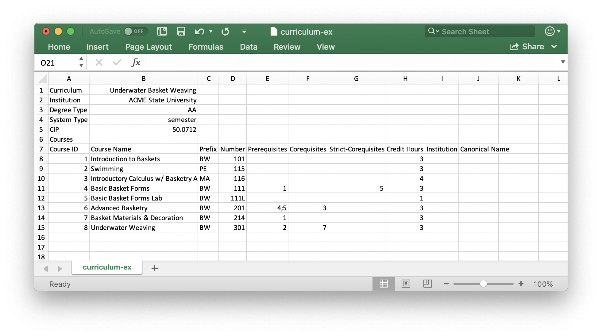
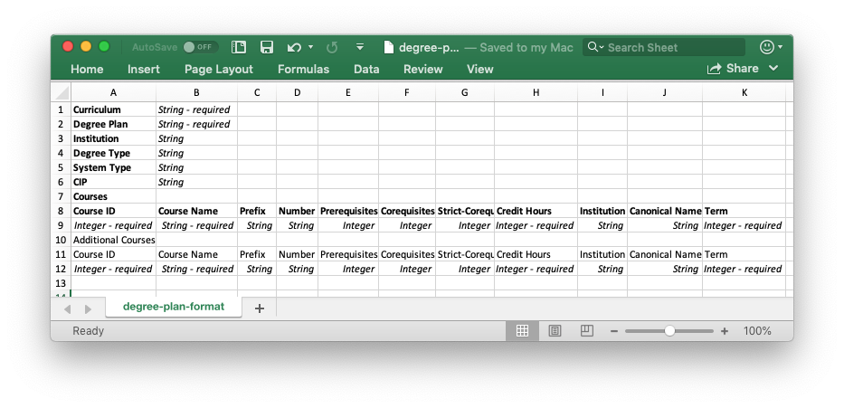

Reading/Writing Curricula & Degree Plans
The ability to read/write curricula and degree plans to disk is greatly facilitated by using the functions described here.
File Format
The CSV file format stores data as comma-separated values in a text file, allowing data to be presented in tabular form. You can open CSV files with either a text editor or by using your favorite spreadsheet program. The sections below describe the CSV file formats used for curricula and degree plans, as well as functions that can be used to read/write these CSV files.
Curricula Files
The CSV file format used to store curricula is shown below: The elements shown in boldface are required keywords that must appear in the curriculum CSV file, while the italicized elements are user supplied arguments. Notice that the italicized elements stipulate the input type, and whether or not the argument is required.
More specifically, the data that is expected to follow each keyword provided in the curriculum CSV file is described next:
- Curriculum : the name of the curriculum/degree program (required).
- Institution : the name of the institution offering the curriculum/degree program.
- Degree Type : the type of degree that will be earned by completing the curriculum. Allowable values are: AA, AS, AAS, BA, BS.
- System Type : the type of system the institution's operations on. Allowable values are: semester quarter
- CIP : the Classification of Instructional Programs (CIP) code for the curriculum. See:
https://nces.ed.gov/ipeds/cipcode - Courses : a keyword that appears on a line by itself (i.e., with no following data). A single header row should appear below this keyword, followed by the row-by-row list of courses associated with the curriculum. The required keywords in the header row, and the data that should appear below each header are as follows:
- Course ID : the unique integer ID of the course (required).
- Course Name : the name of the course (required).
- Prefix : the prefix associated with the course.
- Number : the number associated with the course.
- Prerequisites : a (semicolon separated) list of all required prerequisites, by Course ID.
- Corequisites : a (semicolon separated) list of all required corequisites, by Course ID.
- Strict-Corequisites : a (semicolon separated) list of all required strict-corequisites, by Course ID.
- Credit Hours : the number of credit hours associated with the course (required).
- Institution : the institution offering the course (may be different from the institution offering the curriculum).
- Canonical Name : the canonical (i.e., common) name used for the course.
Below is an example curriculum file that uses the aforedescribed format:  A link to this CSV file can be found here, and a visualization of this curriculum, created using the function described in Visualization Functions, is as follows:
Degree Plan Files
The CSV file format used to store degree plans is shown below:  The elements shown in boldface are required keywords that must appear in the degree plan CSV file, while the italicized elements are user supplied arguments. Notice that the italicized elements stipulate the input type, and whether or not the argument is required.
The data that is expected to follow each keyword provided in the degree plan CSV file is the same as those for curriculum CSV files above, with two additions:
- Degree Plan : the name of the degree plan (required).
- Term : this keyword appears at the end of the header row associated with courses (required). The term that a course should appear in as a part of a degree plan should be listed under this keyword.
Below is an example degree plan file that uses the aforedescribed format. This degree plan satisfies the curriculum shown in the previous section, and it includes one additional prerequisite course. Notice that term information is also provided with each course. A link to this CSV file can be found here, and a visualization of this degree plan, created using the function described in Visualization Functions, is as follows:
Writing Curricula and Degree Plans
CurricularAnalytics.write_csv — Functionwrite_csv(c::Curriculum, file_path::AbstractString)Write (i.e., serialize) a Curriculum data object to disk as a CSV file. To read (i.e., deserialize) a curriculum CSV file, use the corresponding read_csv function. The file format used to store curricula is described in File Format.
Arguments
c::Curriculum: theCurriculumdata object to be serialized.file_path::AbstractString: the absolute or relative path where the CSV file will be stored.
Examples:
julia> write_csv(c, "./mydata/UBW_curric.csv")write_csv(dp::DegreePlan, file_path::AbstractString)Write (i.e., serialize) a DegreePlan data object to disk as a CSV file. To read (i.e., deserialize) a degree plan CSV file, use the corresponding read_csv function. The file format used to store degree plans is described in File Format.
Arguments
dp::DegreePlan: theDegreePlandata object to be serialized.file_path::AbstractString: the absolute or relative path where the CSV file will be stored.
Examples:
julia> write_csv(dp, "./mydata/UBW_plan.csv")Reading Curricula and Degree Plans
CurricularAnalytics.read_csv — Functionread_csv(file_path::AbstractString)Read (i.e., deserialize) a CSV file containing either a curriculum or a degree plan, and returns a corresponding Curriculum or DegreePlan data object. The required format for curriculum or degree plan CSV files is described in File Format.
Arguments
file_path::AbstractString: the relative or absolute path to the CSV file.
Examples:
julia> c = read_csv("./mydata/UBW_curric.csv")
julia> dp = read_csv("./mydata/UBW_plan.csv")